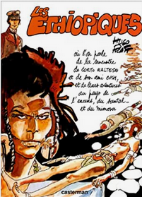

Les Ethiopiques, divisé en quatre épisodes, est le cinquième album de la série Corto Maltese. Publié dans Pif Gadget de 1972 à 1973, il est important car il marque la dernière collaboration de Pratt avec l'hebdomadaire, qui juge le personnage du marin trop libertaire. Il sera publié en album pour la première fois en France en 1978.
Les quatres histoires se déroulent fin 1918, au Yémen puis en Afrique de l'Est, de la Somalie au Tanganyika. Corto rencontre lors de son voyage un des personnages jugés les plus importants dans la série: un guerrier afar musulman. Il traverse des régions en proie aux derniers moments de la guerre: le Yémen Ottoman, le Tanganyika, ancienne colonie allemande, etc... Il rencontrera par-ailleurs dans une de ses aventures Mohammed Abdullah Hassan, alias Mad Mullah, chef militaire et religieux somali.
